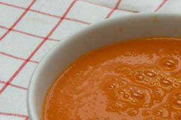

Tomatensoep
Ingrediënten (voor 4 personen)
- 1 ui
- 1 worteltje
- 1 stengel bleekselderij
- 750 g (soep)tomaten
- 25 g boter of margarine
- 2 theelepels tijm
- 1 theelepel majoraan
- 5 zwarte peperkorrels
- 1 vleesbouillontablet
- zout, peper
Bereiding
- Ui pellen en snipperen. Het worteltje schrappen, wassen en in plakjes snijden. De bleekselderij
wassen en ook deze in plakjes snijden.
- De tomaten wassen en in vieren snijden.
- In een pan de boter smelten. De uisnippers, de wortel- en bleekselderijplakjes en de tomaten
erdoor scheppen. Met het deksel op de pan het tomatenmengsel ± 3 minuten zachtjes smoren.
- Aan het tomatenmengsel toevoegen: 2 takjes peterselie, tijm, majoraan, peperkorrels,
bouillontablet en ½ liter water.
- Het geheel aan de kook brengen en met het deksel op de pan ± 15 minuten zachtjes laten koken.
- In een andere pan een zeef hangen. Het tomatenmengsel met het vocht in de zeef scheppen en
alles met een houten lepel erdoor wrijven.
- De tomatensoep op smaak brengen met zout en peper.